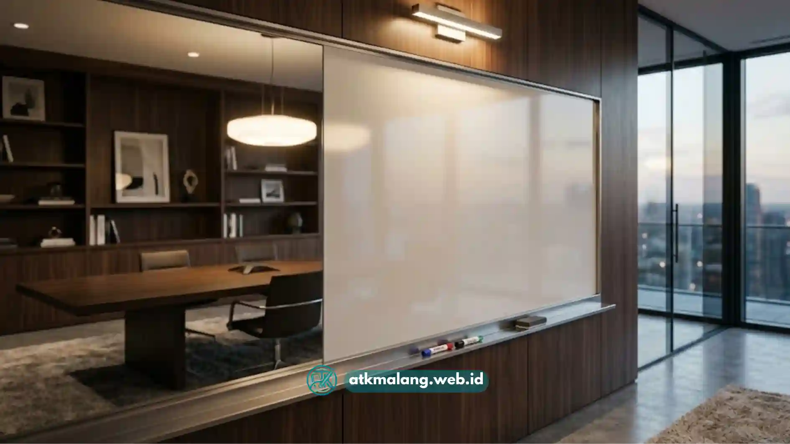

Spidol whiteboard Malang yang hemat tinta dan mudah dihapus umumnya memiliki tinta berbasis alkohol berkualitas stabil, ujung tip yang presisi, dan tutup rapat yang mencegah tinta cepat kering saat tidak dipakai.
Tinta yang hemat bukan berarti tinta encer, melainkan tinta dengan konsentrasi pigmen yang pas sehingga tidak boros saat digoreskan ke papan tulis kelas atau ruang rapat.
Spidol whiteboard adalah Alat Tulis Kantor yang hampir setiap hari digunakan. Karena frekuensi pemakaiannya tinggi, pemilihan produk berdampak langsung pada anggaran sekolah atau instansi.
Daftar Isi
- Apa yang Membuat Spidol Whiteboard Boros Tinta?
- Bagaimana Ciri Spidol Whiteboard yang Hemat Tinta?
- Bagaimana Cara Memastikan Spidol Whiteboard Mudah Dihapus?
- Apa Perbedaan Spidol Whiteboard dengan Spidol Boardmarker Biasa?
- Bagaimana Cara Merawat Spidol Whiteboard agar Tahan Lama?
- Bagaimana Cara Membeli Spidol Whiteboard Malang secara Grosir yang Tepat?
Apa yang Membuat Spidol Whiteboard Boros Tinta?
Spidol whiteboard menjadi boros tinta biasanya karena kualitas tip atau ujung spidol yang terlalu lunak sehingga menyerap dan mengeluarkan tinta secara berlebihan setiap kali digoreskan ke papan.
Selain faktor tip, tutup spidol yang tidak rapat juga menjadi penyebab umum tinta cepat habis meskipun jarang dipakai, karena tinta terus menguap secara perlahan saat spidol tidak digunakan.
Kebiasaan menyimpan Alat Tulis Kantor ini dalam posisi berdiri dengan ujung menghadap ke bawah dalam waktu lama juga dapat mempercepat tinta terkumpul di ujung dan menetes lebih deras.
Faktor lain yang jarang disadari adalah tekanan tangan pengguna saat menulis. Menekan spidol terlalu keras tidak membuat tulisan lebih jelas, justru mempercepat keausan tip dan membuang tinta.

Papan tulis yang bersih tanpa noda sisa tinta berkat spidol yang mudah dihapus.Bagaimana Ciri Spidol Whiteboard yang Hemat Tinta?
Ciri spidol whiteboard yang hemat tinta antara lain garis tulisan tetap jelas meski digoreskan tipis, tip tidak cepat kempis, dan tinta tidak cepat menggumpal di ujung spidol setelah pemakaian.
Saat mencoba sampel, perhatikan apakah satu goresan ringan sudah cukup menghasilkan warna yang jelas terbaca dari jarak beberapa meter, sesuai kebutuhan kelas atau ruang Alat Tulis Kantor Anda.
Spidol yang baru bisa terbaca jelas setelah digoreskan berkali-kali cenderung lebih boros karena penggunanya otomatis menekan lebih keras atau mengulang tulisan terus menerus.
Kualitas tip juga bisa diperiksa secara fisik dengan menekan ringan menggunakan jari. Tip yang elastis dan kembali ke bentuk semula umumnya lebih tahan lama dibanding tip yang kaku atau lembek.
Bagaimana Cara Memastikan Spidol Whiteboard Mudah Dihapus?
Cara memastikan spidol whiteboard mudah dihapus adalah dengan menguji langsung pada permukaan whiteboard yang biasa dipakai, lalu diamkan satu hingga dua menit sebelum dihapus menggunakan penghapus kering.
Tulisan yang mudah dihapus biasanya tidak meninggalkan bayangan warna meskipun sudah beberapa kali dihapus dan ditulis ulang di area yang sama. Kualitas Alat Tulis Kantor ini sangat berpengaruh pada usia papan tulis.
Sebaliknya, spidol dengan kualitas tinta rendah sering meninggalkan bekas samar yang lama-kelamaan menumpuk dan membuat papan tulis terlihat kusam meskipun rutin dibersihkan.
Kondisi permukaan whiteboard itu sendiri juga berpengaruh besar terhadap kemudahan menghapus. Papan yang baret cenderung membuat tinta menempel ke dalam serat permukaannya.
Apa Perbedaan Spidol Whiteboard dengan Spidol Boardmarker Biasa?
Perbedaan utama spidol whiteboard dengan spidol boardmarker terletak pada jenis tinta dan permukaan yang dituju, di mana spidol whiteboard dirancang khusus untuk permukaan board licin dan mudah dihapus.
Sedangkan sebagian boardmarker memiliki variasi formulasi tinta yang berbeda tergantung merek dan peruntukannya, sehingga terkadang meninggalkan bekas jika dipakai sebagai Alat Tulis Kantor papan tulis putih.
Secara umum, pastikan kemasan produk secara eksplisit mencantumkan peruntukan untuk whiteboard agar tinta yang dibeli benar-benar sesuai dan tidak sulit dibersihkan dari papan.
Bagaimana Cara Merawat Spidol Whiteboard agar Tahan Lama?
Cara merawat spidol whiteboard agar tahan lama adalah dengan selalu menutup rapat setelah digunakan, menyimpannya dalam posisi rebah, serta menghindari suhu panas langsung seperti dekat jendela.
Penyimpanan dalam posisi rebah membantu tinta terdistribusi merata di sepanjang tabung spidol, sehingga tidak menumpuk di salah satu ujung saja yang dapat menyebabkan kebocoran Alat Tulis Kantor.
Kebiasaan sederhana ini sering diabaikan di ruang kelas maupun ruang rapat, padahal cukup efektif memperpanjang usia pakai spidol tanpa biaya perawatan tambahan apa pun.
Bagaimana Cara Membeli Spidol Whiteboard Malang secara Grosir yang Tepat?
Cara membeli spidol whiteboard Malang secara grosir yang tepat adalah dengan meminta sampel terlebih dahulu sebelum order besar, dan memilih grosir yang bersedia memberikan garansi tukar produk cacat.
Pembelian grosir umumnya lebih menguntungkan dari sisi harga per batang untuk Alat Tulis Kantor, namun risiko mendapat unit kering juga lebih besar bila tidak ada jaminan mutu.
Oleh karena itu, kebijakan retur atau tukar dari pihak grosir menjadi salah satu poin penting yang wajib dikonfirmasi sebelum transaksi pengadaan disepakati.
Memilih spidol whiteboard Malang yang hemat tinta dan mudah dihapus membutuhkan uji coba langsung. Perhatikan kualitas tip, cara penyimpanan, dan layanan purna jual supplier.
Bagi sekolah atau kantor yang membutuhkan suplai lain, pelajari juga daftar harga spidol boardmarker grosir Malang agar seluruh kebutuhan Alat Tulis Kantor terpenuhi efisien.